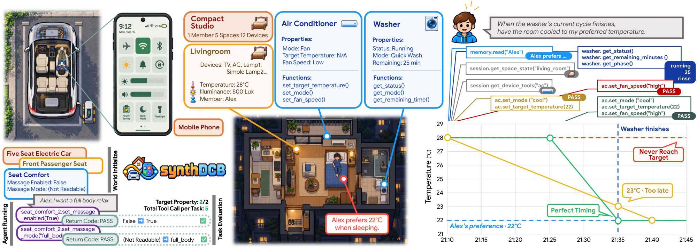
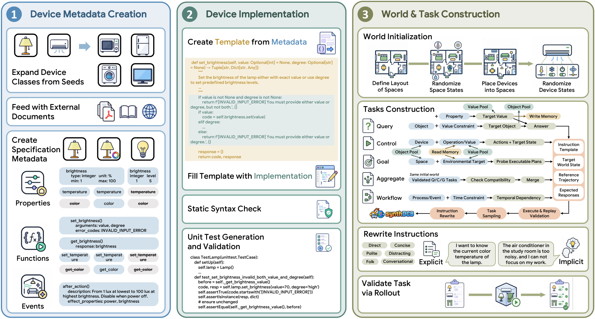

Device metadata
Transform behavioral knowledge into structured properties, functions, and events.
From device knowledge to executable worlds.
From executable worlds to verifiable tasks.

THE BENCHMARK
Scaling device-control evaluation requires scaling both the worlds agents interact with and the tasks they must solve. We introduce SynthDCB, a scalable benchmark for environment awareness and device control built through world distillation. World distillation transforms knowledge of device behaviors, interaction constraints, and environmental effects into modular executable components, which are composed into interactive worlds with explicit states, actions, and temporal dynamics. A unified capability representation connects tool discovery, world execution, and task synthesis, allowing new capabilities to enter evaluation through a shared construction pipeline. SynthDCB instantiate Home, Car, and Phone domains with 114 device classes, 1,166 functions, and 95 events, supporting 5 task families with 32 subtypes. The stateful design enables efficient task validation and agent evaluation through state correctness and tool-call traces. We evaluate seven models on 2,560 test tasks; the best achieves 68.2% Pass@1. Error analysis reveals challenges in answer delivery, feasibility diagnosis, and temporal coordination. Construction experiments demonstrate scalability across domains and token efficiency, world distillation reduces token consumption by 0.9–66.0% and 46.2–92.5% relative to Codex low and xhigh, while achieving broader capability coverage. SynthDCB makes executable world construction the basis of scalable device-control benchmarking, connecting an expanding space of capabilities and interactions to verifiable agent evaluation.
WORLD DISTILLATION
A shared capability specification connects device discovery, world execution, and task construction.

Transform behavioral knowledge into structured properties, functions, and events.
Implement reusable device models with component checks and bounded repair.
Compose interactive worlds and validate tasks through execution and reference replay.
EIGHT STYLES · THREE MODELS
Select a style or a chart point to inspect values. Toggle models using the legend. Implicit instructions omit details; the shaded region marks this change in available information.
THREE DOMAINS · 32 FRAMEWORK SUBTYPES
Browse real instructions from the validation set. Choose a domain and task subtype, or explore the whole wall.
SEVEN MODELS · 32 SUBTASKS
Select a point to compare models. All domains pools task counts; gaps indicate no test samples. Scroll horizontally to explore all subtypes.
RESOURCES
Follow the repository for release updates.
If you find this work useful, please cite:
@misc{zhu2026synthdcb,
author = {Zhu, Zichen and Liu, Dingye and Jiang, Nan and Zhang, Danyang and Zheng, Hang and Zheng, Shijie and Zhang, Situo and Lan, Kunyao and Ma, Yingzi and Jiang, Sheng and Chen, Lu and Yu, Kai},
title = {SynthDCB: World Distillation for Scalable Device Control Benchmarking},
year = {2026},
url = {https://github.com/X-LANCE/SynthDCB}
}